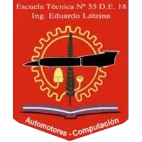

Automotores
Formación técnica en el área automotriz.

E.T. N° 35 · D.E. 18Distrito Escolar 18
Formando técnicos desde 1951
Más de 70 años de historia dedicados a la formación de técnicos comprometidos con el conocimiento, el trabajo y la comunidad.
Acompañamos a los estudiantes hacia un futuro de excelencia profesional y ciudadana. Esta aplicación de mensajería sirve para comunicar los casos especiales: profesores, preceptores y Regencia envían informes a cada alumno, y queda registro de quién lo envió, qué intervino cada área y cuándo lo leyó el alumno.
Formación técnica en el área automotriz.
Formación técnica en el área informática.
Elegí cómo querés ingresar.